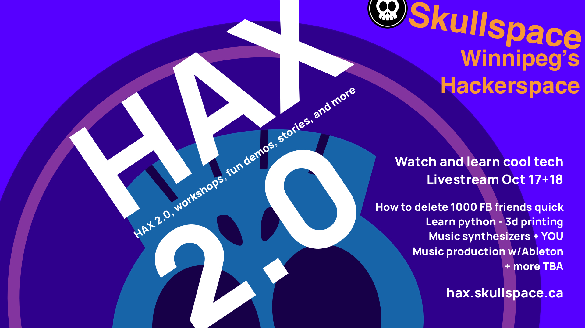
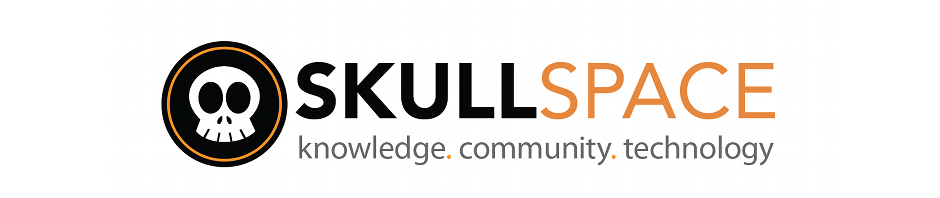

Hax
A hackerspace weekend (virtual) festival

Friday October 16, 2020: evening
Saturday October 17, 2020: afternoon and evening
Sunday October 18, 2020: afternoon
An virtual/online hackerspace festival over a weekend featuring live presentations, panels, performances, and online gaming play sessions.
Admission by donation, proceeds to support Skullspace.
Submit your pitch for presentation, panel, performance or play session that would be of interest to a hackerspace community by email to Mark Jenkins mark@parit.ca.
The goal is to have most presentations and performances given live, but some pre-recorded presentations can be accommodated.
$50 honorariums are available for a limited number sessions, submit your pitch ASAP to be eligible.
Schedule
(The schedule is a work in progress! Exepect new people, new times up to Thursday October 15)
Friday October 16, 2020
- 7:30pm -- Double-feature movie night and live chat with Skullspace members.
Saturday October 17, 2020
- 12:30pm -- Welcome remarks from the board of directors.
- 1pm -- How to delete 1000 facebook friends in an afternoon -- Sara Arenson.
- 2:30pm -- Testing Python with Pytest -- Alex Weber.
- 3:30pm -- How to 3d Print Cool Stuff In Winnipeg -- Hugh Campbell.
- 4:30pm -- Music production w/Ableton -- DJ QUBE
- 6:30pm -- Building a Better Rain Barrel Spigot -- Andrea Mantler
Saturday night performances
Sunday October 18, 2020
- 1pm -- Winnipeg amateur radio / tech related stores -- Colin Stanners
- 2pm -- Modular Synthesizers & you -- Kyle Martin
- 3pm -- Online gaming meetup -- Hosts needed! (email mark@parit.ca)
- 6pm -- Skullspace, the state of virtualization and shared hosting infrastructure -- Mark Jenkins

This web page on GitHub.